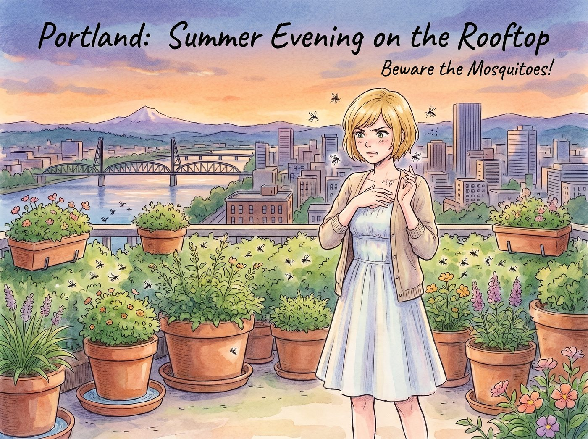

天台蚊子大戰

波特蘭雖然夏季不算極度潮濕，但作為一個多雨且綠植覆蓋率極高的城市，一到夏秋交際的傍晚，天台上的蚊子——尤其是在 Kate 悉心打理的那些帶水托盤的花盆周圍——絕對是一股不可忽視的「暗黑勢力」。
只要四人敢在天台上看露天電影或打理花草超過半小時，這場「人蚊大戰」就會迅速演變成典型的四人組喜劇。
一、Victoria：頭號 VIP 目標
嬌貴的名媛體質加上身上昂貴的甜香水，讓 Victoria 瞬間成為全天台蚊子的首選目標。露天電影才放了半小時，她那雙原本白皙修長的小腿和手腕上就整整齊齊腫起了四五個大紅包，甚至連鎖骨邊緣都沒能倖免。
她一邊氣急敗壞地用真絲披肩把自己裹成木乃伊，一邊噴灑從巴黎空運過來的高級有機防蚊噴霧——然而對俄勒岡本土兇殘的野蚊子毫無作用——嘴裡瘋狂控訴：「Marsh！妳那些有機番茄盆栽到底是在搞生態農場，還是在給吸血昆蟲建造五星級度假村？！」
二、Max：後知後覺滿頭包
端著相機拍夜景或專心盯著投影儀螢幕時，Max 完全沉浸其中，根本感覺不到被咬。等一場老電影看完，她才會突然回過神來，發現自己膝蓋、手肘和腳踝全是大包，癢得她不停用手指在紅包上掐出「十字封印」，鼻樑上架著的眼鏡都被撓得歪歪扭扭：「等等……Chloe，我的腳踝好像腫得像個馬鈴薯……」
三、Kate：天然草本防禦大師
身為植物專家，Kate 早就預料到了這個問題。她在天台周圍種滿了香茅、檸檬尤加利、薄荷與迷迭香，形成了一道天然的植物結界。
看見 Victoria 抓狂、Max 瘋狂掐十字，Kate 會立刻拿出一小盒用自產蜂蠟和薄荷精油親手熬製的「天然草本止癢膏」，輕柔地幫大家塗抹在紅腫處：「忍耐一下哦，薄荷精油很快就能鎮靜下來的。下週我會在花盆托盤裡放一些防孑孓的銅幣，蚊子就不會在那裡產卵了。」
四、Chloe：重型物理雙重降維打擊
對於皮糙肉厚、日常滿身機油與薄荷煙草味的 Chloe 來說，蚊子甚至嫌她「口感太硬」。但看到 Max 和 Victoria 被咬，她體內的硬核工程師靈魂立刻覺醒。
她翻出修車用的強效工業級除油風炮改裝成「超大功率抽風滅蚊扇」；在天台四角點上四個用金屬零件改裝的重型艾草驅蚊熏爐，搞得整個天台宛如加農海灘升起的濃重煙霧信號；手裡拿著一把通電的電蚊拍，宛如絕地武士揮舞光劍一樣在天台上四處追殺，空中不斷傳來「啪啪啪」的清脆電擊聲與火花，她還會極其囂張地大笑：「哈！吃老娘一記 12 伏特特種電擊！敢動 Maxine 的血，這就是下場！」
最後的結果通常是：四個人裹著薄毯、渾身散發著濃烈的薄荷膏與艾草熏香氣味，在 Chloe 電蚊拍的噼啪伴奏聲中，心滿意足地看完了星空下的老電影。